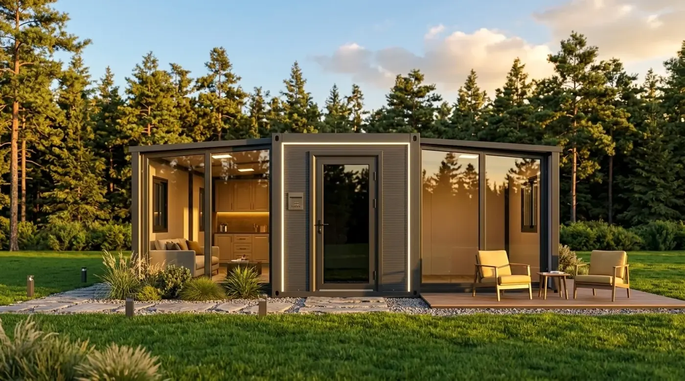

Modulární dům
bez stavebního
povolení
Někdy ho opravdu nepotřebujete. Častěji ano. Rozhoduje velikost, účel a pozemek, ne to, že dům přijede hotový a stojí na betonových patkách. Závazně vám odpoví jedině váš stavební úřad.
Krátká
odpověď
Stavební zákon má tuhle otázku postavenou obráceně, než většina lidí čeká. Povolení není výjimka, ale pravidlo. Výjimky jsou vyjmenované.
Záměr vyžaduje povolení s výjimkou drobných staveb a změn využití území, u kterých tak stanoví tento zákon.
§ 171 stavebního zákona
Jediná kategorie staveb, která povolení nepotřebuje, jsou tedy drobné stavby. Zákon je vypisuje v příloze č. 1 a je to uzavřený seznam. Co v něm není, povolení potřebuje.
Náš dům se do toho seznamu vejít může, ale jen v určitém použití a na určitém pozemku. Když v něm chcete bydlet nebo rekreovat, nevejde se. Proč, to je hned níž.
Kdy povolení
nepotřebujete
Na pozemku rodinného domu nebo stavby pro rodinnou rekreaci zákon dovoluje postavit bez povolení stavbu do 40 m² zastavěné plochy. Tahle výjimka se na internetu opisuje pořád, jenže je to jedna jediná věta a podmínek je v ní devět. Platit musí všechny současně.
- Do 40 m² zastavěné plochy
- Do 5 m výšky
- Nejvýše jedno nadzemní podlaží
- Podsklepení nejvýše 3 m
- Na pozemku rodinného domu nebo stavby pro rodinnou rekreaci
- Souvisí s bydlením nebo rekreací, není tedy sama tím bydlením
- Není pro podnikání
- Nejméně 2 m od hranic pozemků
- Vsakování: po umístění stavby musí nejméně 50 % plochy pozemku vsakovat dešťovou vodu
Když jedna podmínka nesedí, stavba z kategorie drobných staveb vypadne a povolení potřebuje. U odstupu od hranic to zákon říká výslovně: drobná stavba, která odstupovou vzdálenost nedodrží, se stává jednoduchou stavbou.
A pozor na to, jak se počítá zastavěná plocha. Zákon do ní zahrnuje i zastřešené části bez obvodových stěn, tedy krytou terasu. Rozměr 6,32 × 5,90 m sám o sobě tedy není ten údaj, se kterým úřad počítá.
Proč se výjimka
na bydlení
nevztahuje
Příloha č. 1 má i druhý odstavec a ten některé stavby z drobných staveb vylučuje bez ohledu na velikost. Na prvních dvou místech stojí stavby pro bydlení a stavby pro rodinnou rekreaci.
To je pro modulární dům rozhodující. Dokud stojí na zahradě jako zázemí k domu, tedy dílna, sklad nebo letní kuchyň, drobnou stavbou být může. Ve chvíli, kdy je to bydlení nebo chata, drobná stavba to není a povolení potřebuje.
Zákon přitom slova „stavba pro bydlení“ ani „stavba pro rodinnou rekreaci“ nedefinuje. Rozhoduje účel, ke kterému stavbu užíváte, a ten posuzuje stavební úřad. Právě proto vám na otázku, jestli váš dům povolení potřebuje, nemůže odpovědět výrobce.
Jedna výjimka pro rekreaci v příloze je. Stavba do 55 m² a do 4 m výšky včetně základové konstrukce, ale jen na pozemku, který je pro plochy rekreace určen územním plánem s prvky regulačního plánu nebo regulačním plánem. Běžný územní plán obce takovou podrobnost neobsahuje, takže se to v praxi týká málokterého pozemku.
Když dům bydlením nebo rekreací je, spadá mezi jednoduché stavby. Ty povolení potřebují, ale úřad o nich rozhoduje do 30 dnů, ne do 60 jako u ostatních staveb.
Ohlášení stavby
už neexistuje
Tohle je nejčastější zastaralá informace, na kterou při hledání narazíte. Ohlášení stavby byl institut starého stavebního zákona č. 183/2006 Sb., konkrétně jeho § 104 a § 105. Ten zákon je zrušený a u běžných staveb, tedy i u zahradních domků a modulárních domů, se podle nových pravidel postupuje od 1. července 2024.
Dnes existuje jediné rozhodnutí o povolení záměru. Není žádná mírnější varianta, kterou by šlo místo něj podat. Věta „na zahradní domek stačí ohlášení“ se drží na řadě webů, jenže popisuje pravidla, která u běžných staveb už dva roky neplatí.
Nejblíž tomu, co dřív bylo ohlášení, je zrychlené řízení. Povolení v něm úřad vydá jako první úkon v řízení, jenže musí být splněno pět podmínek současně. Nejtěžší z nich je poslední: doložit souhlasy všech účastníků řízení vyznačené na situačním výkresu dokumentace. Účastníkem je vedle vás a obce i každý soused, jehož práva k pozemku můžou být rozhodnutím přímo dotčena.
Když podmínky splněné nejsou, žádost se nezamítá. Úřad jen povede běžné řízení.
Rozhoduje velikost,
účel a pozemek
Velikost
Zastavěná plocha, výška, počet nadzemních podlaží a hloubka podsklepení. Náš dům má rozložený 6,32 × 5,90 m, výšku 2,48 m, jedno podlaží a není podsklepený.
Do zastavěné plochy se ale počítá i krytá terasa, protože zákon k ní přistupuje jako k zastřešené části bez obvodových stěn. Přesnou zastavěnou plochu vaší sestavy vám spočítáme, ať máte co napsat do dotazu na úřad.
Účel
Bydlení, rekreace, zázemí k domu nebo podnikání. Účel je ta věc, která rozhodne nejčastěji, a bere se podle toho, jak stavbu opravdu užíváte, ne podle toho, jak se jmenuje v katalogu.
U bydlení a u rodinné rekreace je výjimka pro drobné stavby vyloučená. U podnikání také. Ubytování hostů, tedy glamping i pronájem na noci, je podnikání.
Pozemek
Ta samá stavba má jiný režim na zahradě u rodinného domu, v zahrádkářské osadě a na holé parcele. Výjimka do 40 m² je vázaná na pozemek rodinného domu nebo stavby pro rodinnou rekreaci. Na louce ani na zahradě bez domu neplatí.
Soulad s územním plánem obce navíc platí i pro stavbu, která povolení nepotřebuje.
Drobné stavby lze realizovat pouze v souladu s územně plánovací dokumentací.
§ 73 odst. 2 stavebního zákona
Když je pozemek v chráněné krajinné oblasti nebo v památkové zóně, mluví do toho ještě další zákony a další úřady.
Betonové patky
nejsou klička

Dům stojí na betonových patkách a klasické základy nepotřebuje. To je pravda a je to jeden z důvodů, proč je stavba rychlejší a levnější. Na povolení to ale nemá vliv, i když se to tak často podává.
Stavební zákon podmínku pevného spojení se zemí u pojmu stavba vůbec nemá. Stavbou je stavební dílo, které vzniká stavební nebo montážní činností za účelem užívání na určitém místě. A hned další věta zavírá i druhou obvyklou kličku:
Za stavbu se považuje také výrobek plnící funkci stavby.
§ 5 odst. 1 stavebního zákona
Výrobky plnící funkci stavby zákon výslovně řadí mezi jednoduché stavby, a to včetně základových konstrukcí pro ně, pokud nejde o drobnou stavbu. Že dům přijede hotový a na místě se jen usadí, tedy z rovnice nic neubírá.
Nepomůže ani označení dočasná stavba. Dočasnou je podle zákona ta stavba, u které dobu trvání předem omezí stavební úřad. Není to volba vlastníka, povoluje se stejně, a když po uplynutí doby nepožádáte o prodloužení, úřad nařídí stavbu odstranit.
Co si zařídíte sami
a co uděláme my
Na vás
- Papíry na úřadě. Povolení, nebo dotaz na to, jestli je potřeba
- Soulad s územním plánem pro vaši parcelu
- Přípojky vody, elektřiny a odpadu k místu usazení
- Souhlas vlastníka pozemku, když pozemek není váš
- Souhlasy sousedů, pokud chcete jít zrychleným řízením
Na nás
- Rozměry, hmotnost a zastavěná plocha vaší sestavy, tedy čísla, která úřad chce
- Technické provedení, konstrukce, materiály a zateplení
- Betonové patky a usazení jeřábem
- Doprava a montáž na pozemek
Vyřízení povolení neděláme a připojení na sítě také ne. Je to práce pro někoho, kdo zná váš pozemek a váš úřad. Co pro vás udělat můžeme, je dodat všechny technické podklady tak, aby se na úřadě nemuselo nic dohadovat.
Na co se zeptat
úřadu a jak
Stavební zákon má na přesně tuhle situaci vlastní nástroj a málokdo o něm ví. Jmenuje se předběžná informace, najdete ji v § 174 a úřad ji na žádost poskytne do 30 dnů. Zeptat se v ní můžete přímo na to, jestli váš záměr potřebuje povolení a kolaudaci.
Žádost jde na obecní stavební úřad, elektronicky přes portál stavebníka nebo v listinné podobě. Zákon u ní chce konkrétní údaje o záměru, zejména jeho umístění, účel a technické provedení. Čím konkrétnější dotaz, tím použitelnější odpověď.
Co do žádosti napsat
- Parcelní číslo a katastrální území
- K čemu dům bude sloužit. Napište to na rovinu, účel je to nejdůležitější
- Vnější rozměry a zastavěnou plochu včetně kryté terasy
- Výšku, počet podlaží a to, že je stavba nepodsklepená
- Způsob založení, tedy betonové patky
- Vzdálenost od hranic pozemku
- Co na pozemku stojí dnes, hlavně jestli je tam rodinný dům
Tři otázky, které se vyplatí položit
Předběžná informace není povolení. Je to odpověď na dotaz, kterou ale máte písemně a od úřadu, který o vaší stavbě nakonec rozhoduje. To je pořád nesrovnatelně víc než ústní ano od okénka nebo věta z diskusního fóra.
Napište nám, jaký dům zvažujete a kam ho chcete postavit, a pošleme vám technické údaje, které do té žádosti patří.
Časté omyly
Ta hranice je jen jedna z devíti podmínek jedné věty. U staveb pro bydlení a pro rodinnou rekreaci výjimka neplatí vůbec, bez ohledu na metry. A do zastavěné plochy se počítá i krytá terasa.
Stavební zákon podmínku pevného spojení se zemí u pojmu stavba nemá. Rozhoduje to, že stavba vznikla montáží a užívá se na určitém místě.
Zákon výrobek plnící funkci stavby za stavbu považuje a řadí ho mezi jednoduché stavby, pokud nejde o drobnou stavbu. Rozhoduje účel, ne způsob výroby.
Ohlášení stavby zrušil nový stavební zákon. U běžných staveb se od 1. července 2024 vydává jediné povolení záměru.
Dočasnou stavbu určuje stavební úřad tím, že jí předem omezí dobu trvání. Povoluje se stejně jako každá jiná.
Dodatečné povolení existuje, ale je to úzká cesta. Žádost se podává do 30 dnů od zahájení řízení o odstranění stavby, jinak už dodatečně povolit nelze, a jednou z podmínek je zaplacená pokuta. Provést stavbu bez povolení, které zákon vyžaduje, je přestupek a zákon u něj připouští pokutu do 2 000 000 Kč (§ 301 odst. 3 písm. c). Strop není běžná praxe: stavební úřad Prahy 12 uložil v srpnu 2024 za sklad o 34,5 m² postavený bez povolení 5 000 Kč (příkaz čj. P12 40479/2024 OVY, PDF). V chráněném území je strop dvojnásobný, 4 000 000 Kč.
Z čeho
text vychází
Vycházíme ze zákona č. 283/2021 Sb., stavebního zákona, ve znění účinném k září 2026, a z vyhlášky č. 146/2024 Sb. o požadavcích na výstavbu. Citace jsou doslovné.
Nejsme advokátní kancelář ani projektanti a tenhle text není právní poradenství. Stavební zákon se novelizuje často a o vašem pozemku rozhoduje váš stavební úřad, takže si závazné vyjádření vyžádejte tam. Odpovědi na ostatní otázky kolem domu najdete v častých dotazech a parametry stavby na stránce rozkládacího domu.
Potřebujete čísla
na úřad?
Napište, jaký dům zvažujete a na jaký pozemek ho chcete postavit. Pošleme vám rozměry, zastavěnou plochu, hmotnost a technické provedení, tedy všechno, co do dotazu na stavební úřad patří, a k tomu cenovou nabídku.
Nezávazně, bez placení předem. Ozveme se do 24 hodin.